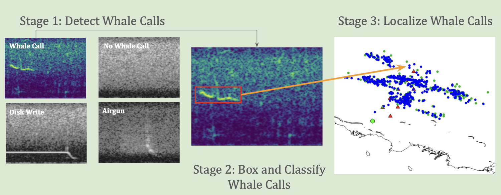
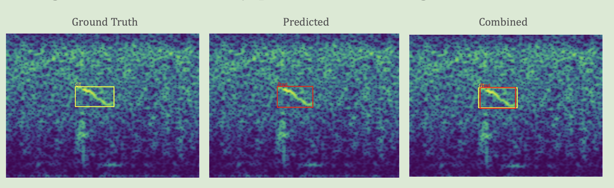
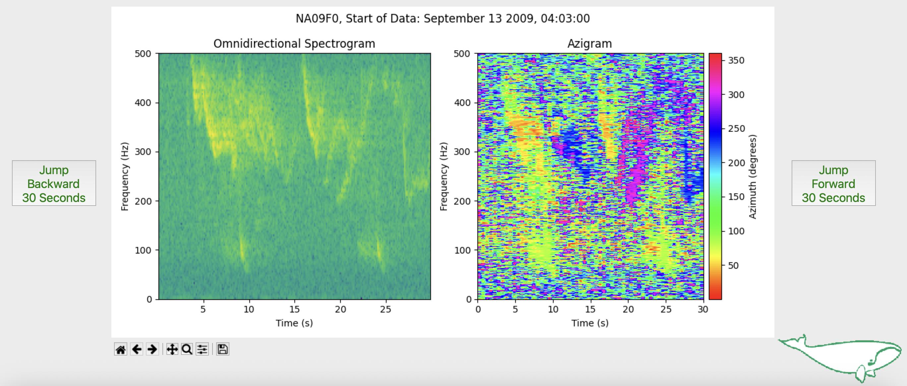
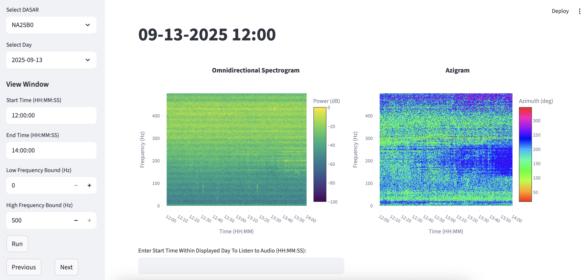
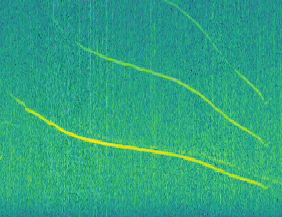
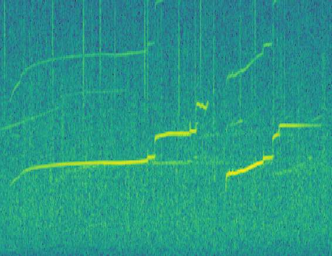
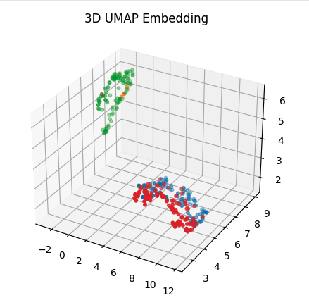

Stage 0: All signal processing decisions related to converting from raw, omnidirectional acoustic data from our hard drives to usable spectrograms for later stages. Key decisions involved identifying optimal FFT size for time and frequency resolution, windowing, overlap, spectrogram duration, and log compression / normalization.
Stage 1: A classifier that extracts whale calls with > 97% accuracy.
Stage 2: An object detection algorithm with FasterRCNN architecture that boxes whale calls and classifies their type with 95% precision and 84% recall (Figure 2).
Stage 3: A matching algorithm that matches calls across sensors and triangulates the whale call's source to a median of 97 meters from the original estimate obtained from the manual analyst (over a detection range of > 200 square kilometers). The matching algorithm I developed is based on template matching, a computer vision technique that is essentially the 2D analogue of 1D matched filtering. Bearing estimates are obtained by:
This GUI helped Greeneridge diagnose unexpected changes in bearing during the 2025 deployment period, allowing us to narrow in on the day and time that one of the sensors shifted in position on the sea floor.




Currently developing supervised and unsupervised machine learning methods for acoustic feature extraction of odontocete vocalizations to demonstrate species-level differences and vocal production learning in beluga whales using data-science and ML visualization techniques (t-SNE, UMAP, Topological Data Analysis, Class Activation Maps).


